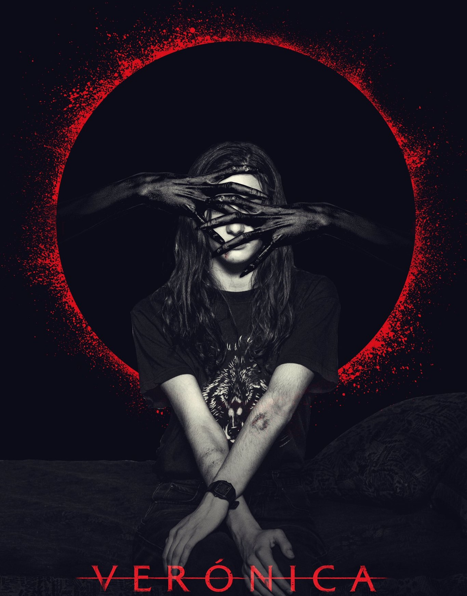

Veronica
Story behind the movie

Veronica, the Spanish horror film directed by Paco Plaza, draws inspiration from a chilling true story. In 1992 Madrid, Estefania Gutierrez Lazaro, a teenage girl, attempted a séance using an Ouija board. Tragically, she died mysteriously after this encounter. The police investigation remained unsolved. Estefania's seizures, hallucinations, and paranormal experiences haunted her for months. The movie mirrors her eerie tale, as Veronica and her friends accidentally contact her late father during a seance. The film blurs reality, leaving viewers questioning whether the supernatural events are genuine or products of Veronica's imagination.